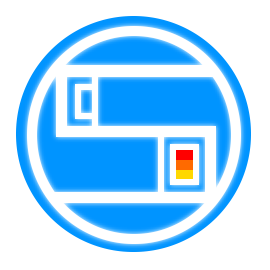
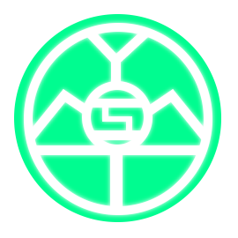
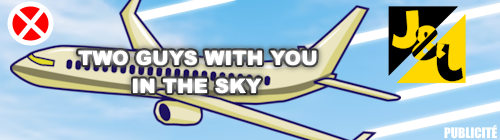

L'entreprise SkyMotors a été fondé officiellement le 7 mars 2030 mais l'idée est dans la tête de
Gabriel Frouard, le fondateur, depuis son accident du 29 Novembre 2028.
Connu sous le nom "Projet Cyclosphere" il s'entoura de professionnels compétents dans la programmation d'IA et d'ingénieurs pour développer son idée.
Parmi eux :
Jean Babou : le cofondateur et investisseur principal du projet.
Aloïs Barraud : Développeur de l'IA principale des premières SkyMotors, souvent accompagné par son équipe de développeurs acharnés.
Raphaël Hidier : Ingénieur de génie, il est le designeur principale de chacun des modèles de SkyMotors.
La " SkyMotors : BreakPoint ", première voiture de la marque, est disponible dans trois concessionaires SkyMotors en France. le Lancement officiel du projet a fait beaucoup de bruit en Europe.
La marque ce développe dans le reste de L'Europe, 158 concessionaires au total, ce développpement est permis grâce à un nouvel investisseur.
Le 2 juin 2038 l'une des "SkyMotors : BlueOffice" en test à cette époque, conduite par Aloïs Barraud a percuté sans le vouloir Lucien Dubreuil lors du tournage d'une publicité. Le rugbyman français a encore pu durée 2 ans, malgrès les sequelles. Cette erreur a menée au renvoi du directeur et à la promotion de Raphaël Hidier .
| Année | Nombre de véhicules vendus | Année | Nombre de véhicules vendus |
|---|---|---|---|
| 2030 | 73000 | 2038 | 520000 |
| 2031 | 150000 | 2039 | 940000 |
| 2032 | 200000 | 2040 | 1400000 |
| 2033 | 350000 | 2041 | 1860000 |
| 2034 | 5500000 | 2042 | 2500000 |
| 2035 | 890500 | 2043 | 2940000 |
| 2036 | 1120000 | 2044 | 3330000 |
| 2037 | 1520000 | 2045 | 4250000 |


